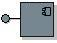

| Artefacto: Subsistema de diseño |
|  |
|
| Artefacto del contenedor | ||
|---|---|---|
| Roles | Responsable: | Modificado por: |
| Tareas | Entrada a:
| Salida de: |
| Uso del proceso | ||
| Descripción principal | Un subsistema de diseño es una parte del sistema que encapsula comportamiento, expone un conjunto de interfaces y empaqueta otros elementos de modelo. Desde el exterior, un subsistema es un elemento de modelo de diseño único que colabora con otros modelados para cumplir sus responsabilidades. Las interfaces externamente visibles y su comportamiento se denominan especificación del subsistema. En el interior, un subsistema es una recopilación de elementos de modelo (clases de diseño y otros subsistemas) que realizan las interfaces y el comportamiento de la especificación del subsistema. Se denomina realización del subsistema. La capacidad de 'encapsulación' de los subsistemas de diseño se contrasta con la del Producto de trabajo: Paquete de diseño, que no realiza interfaces. Los paquetes se utilizan principalmente para la gestión de la configuración y la organización del modelo, donde los subsistemas proporcionan semánticas de comportamiento adicionales. |
|---|
| Opciones de representación | Representación UML: los subsistemas de diseño se modelan como componentes UML 2.0. UML también define un estereotipo para
el componente denominado <<subsystem>>, que indica que también se puede utilizar, por ejemplo, para representar
estructuras a gran escala. Consulte Directriz:
Subsistemas de diseño para la representación.
Los subsistemas de diseño son un importante medio de descomposición de grandes sistemas en componentes comprensibles. Son particularmente útiles en el desarrollo basado en componentes para especificar componentes (consulte Concepto: Componente) de los que se espera que se desarrollen de forma independiente, se vuelvan a utilizar o se sustituyan. Las decisiones importantes de personalización relacionadas con los subsistemas de diseño son:
Esta decisión de personalización debe capturarse en Representación de UML 1.xUna decisión importante dentro de la personalización es si se van a modelar subsistemas de diseño como componentes UML 2.0 o subsistemas UML 1.5 (consulte Directriz: Subsistemas de diseño). Consulte Diferencias entre UML 1.x y UML 2.0 para obtener más información. |
|---|

| Listas de comprobación | |
|---|---|
| Directrices |
© Copyright IBM Corp. 1987, 2006. Reservados todos los derechos. |